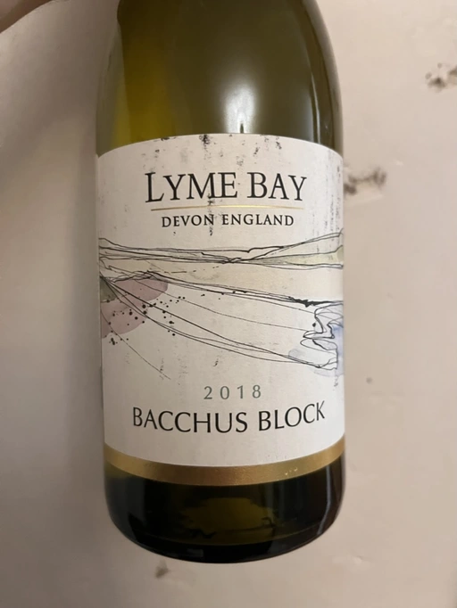
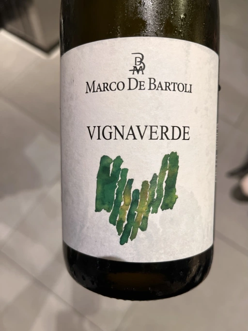
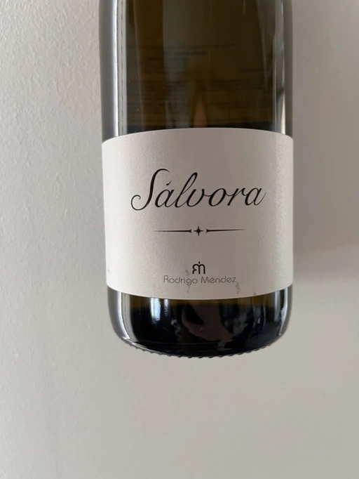
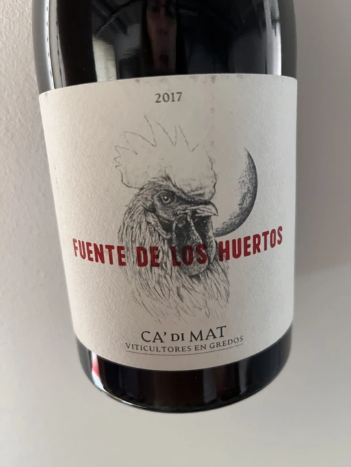
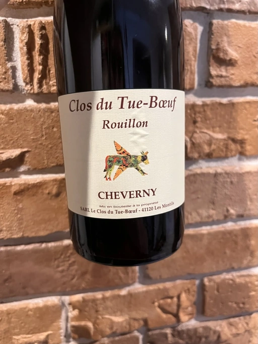
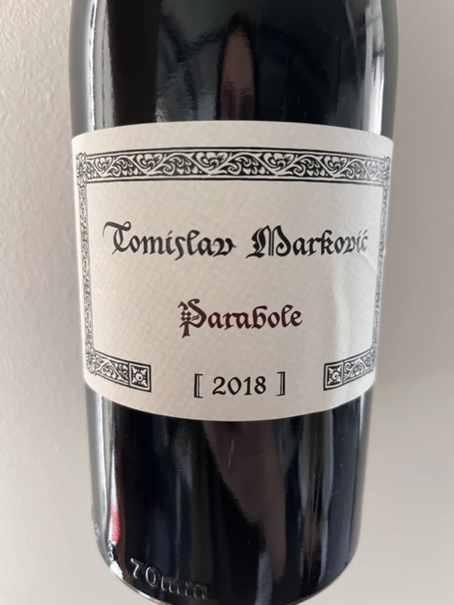
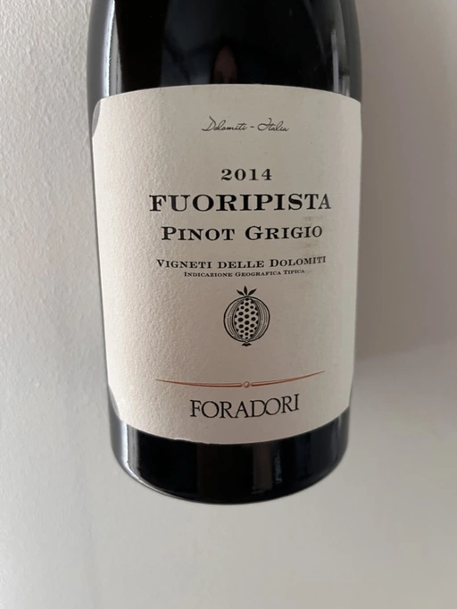

Mixed Bag Vol. 3

Oh, it could be Friday the 13th, but instead, it’s Tuesday. I bet everyone is overly emotional and sad about this significant nuance, so some support is appreciated. Of course, in the form of wine. Nah, in truth, I hate making up excuses or reasons to drink wine. It was made to be enjoyed! Even Jesus turned water (!) into wine (!). And as they say, never put off till tomorrow what can be done the day after tomorrow. Except for the wine.
Alright, jokes aside. It’s not a secret that I love to share wine with others. I am not affiliated with any winemaker, importer or store. And that means I am like that dude handing out religious leaflets on the streets.
Happy to have you around.
So what’s the story I am trying to tell today? Definitely, about passion. About experiment. And desire to make it better. Meet our protagonists.
- Lyme Bay Bacchus Block 2018
- Marco De Bartoli Vignaverde 2019
- Rodrigo Méndez Sálvora 2017
- Ca’ di Mat Fuente de los Huertos 2017
- Tomislav Marković Parabole 2018
- Clos du Tue-Boeuf Rouillon Cheverny 2020
- Foradori Fuoripista Pinot Grigio 2014
- (bonus) Kmetija Štekar Rebula Prilo 2015
Scores
| Wine #1 | Wine #2 | Wine #3 | Wine #4 | Wine #5 | Wine #6 | Wine #7 | Wine #8 | |
|---|---|---|---|---|---|---|---|---|
| Lena M | 2.90 | 3.00 | 3.20 | 3.50 | 4.20 | 4.40 | 3.80 | 3.50 |
| Andrii S | 3.80 | 3.80 | 4.10 | 3.40 | 3.90 | 4.30 | 4.30 | 4.30 |
| Viktoria Zh | 4.00 | 4.10 | 3.90 | 3.80 | 3.60 | 3.80 | 4.20 | 4.50 |
| Maksym K | 3.00 | 3.40 | 3.60 | 3.20 | 3.30 | 3.50 | 4.10 | 3.50 |
| Elvira K | 3.30 | 3.50 | 4.30 | 3.50 | 3.80 | 3.90 | 4.00 | 4.50 |
| Oleksandr Y | 3.80 | 3.80 | 3.90 | 3.90 | 3.80 | 4.00 | 4.20 | 3.80 |
| Anastasiia P | 3.40 | 3.20 | 3.50 | 3.50 | 4.00 | 3.80 | 3.95 | 4.20 |
| Ivietta K | 4.40 | 4.30 | 4.40 | 4.00 | 4.50 | 4.70 | 4.40 | 4.40 |
| Dmytro D | 4.00 | 4.20 | 3.80 | 3.60 | 4.00 | 4.30 | 4.10 | 3.80 |
| Tania S | 4.30 | 4.20 | 4.20 | 4.40 | 4.50 | 4.30 | 4.35 | 4.20 |
| Dmytro S | 3.70 | 3.90 | 3.90 | 3.50 | 4.30 | 4.00 | 4.30 | 4.30 |
| Boris B | 3.80 | 4.00 | 4.20 | 4.20 | 4.00 | 4.20 | 4.20 | 4.20 |
| amean | sdev | favourite | outcast | price | QPR | |
|---|---|---|---|---|---|---|
| Wine #1 | 3.70 | 0.2033 | 0.00 | 1.00 | 819.00 | 1.8842 |
| Wine #2 | 3.78 | 0.1631 | 0.00 | 5.00 | 630.00 | 2.7634 |
| Wine #3 | 3.92 | 0.1147 | 2.00 | 0.00 | 1163.00 | 1.8216 |
| Wine #4 | 3.71 | 0.1158 | 1.00 | 4.00 | 1034.00 | 1.5104 |
| Wine #5 | 3.99 | 0.1141 | 3.00 | 1.00 | 820.00 | 2.8903 |
| Wine #6 | 4.10 | 0.0983 | 4.00 | 0.00 | 1682.00 | 1.6606 |
| Wine #7 | 4.16 | 0.0287 | 2.00 | 1.00 | 1627.00 | 1.8775 |
| Wine #8 | 4.10 | 0.1183 | 0.00 | 0.00 | 1081.00 | 2.5839 |
How to read this table:
ameanis arithmetic mean (and not ‘amen’), calculated as sum of all scores divided by count of scores for particular wine. It is more useful thantotal, because on some events some wines are not tasted by all participants.sdevis standard deviation. The bigger this value the more controversial the wine is, meaning that people have different opinions on this one.favouriteis amount of people who marked this wine as favourite of the event.outcastis amount of people who marked this wine as outcast of the event.priceis wine price in UAH.QPRis quality price ratio, calculated in as100 * factorial(rms)/price. The reason behind this totally unprofessional formula is simple. At some point you have to pay more and more to get a little fraction of satisfaction. Factorial used in this formula rewards scores close to the upper bound 120 times more than scores close to the lower bound.
Lyme Bay Bacchus Block 2018

- producer: Lyme Bay
- name: Bacchus Block
- vintage: 2018
- grapes: Bacchus
- location: Devon, England
- alcohol: 12.5
- sugar: ???
- price: 819 UAH
- importer: Silpo Food
Yup, it’s a Bacchus wine from Devon, England. And before you start asking too many questions, let me assure you that England is an emerging winemaking region. Yes, over the centuries, the English has gained a reputation as wine consumers. Apart from being affiliated with both obscenely large volumes of drunkenness and snobbish appreciation, they played and still play an important role in the wine world, including winemaking.
And imagine, the history of winemaking in this domain spans back to ancient Romans, who introduced locals to virtues of civilisation, including wine. Funny enough, it was possible thanks to climate anomalies as it happened during Roman Climatic Optimum, a period with a relatively warm climate.
Why do I find it funny? Because the English climate was not well suited for vines. Would they go to such lengths to secure wine supply from France, Portugal and Spain (depending on the geopolitical situation) if they had their own wine ‘industry’? My hunch - no, they would not. So all this long history is nice and games, but the wine produced in England didn’t satisfy locals. Until the revival of viticulture in the 1970s onwards. So I find it funny because it is possibly helped by a rising local temperature due to global warming (another climate ‘anomaly’), making many southern parts dry and warm enough to grow grapes of high quality.
Over time the English came from sweet wines to sparkling and dry still wines. According to Wine Folly (not sure where this information actually comes from), 84% of all produced English wines are sparkling or still white. And it kind of makes senses if you think about it. Despite the climate change, England is still a cold climate country. And just like with Champagne, grapes are high in acidity. In such a situation, it is a good decision to produce traditional sparkling wines.
Lyme Bay Winery is located in Devon, South West corner of England. But the winery sources their grapes across the country, and in the case of Baccus Block, all grapes come from a small block at Great Whitmans vineyard in The Crouch Valley, Maldon, Essex. It was planted in 2006.
So this is Bacchus from England. And while we maintain our shocked state, let’s move to the next wine.
Marco De Bartoli Vignaverde 2019

- producer: Marco de Bartoli
- name: Vignaverde
- vintage: 2019
- grapes: Grillo
- appellation: Sicilia DOC
- location: Contrada Samperi, Marsala (TP), Western Sicily, Italy
- alcohol: 12.5
- sugar: 1
- price: 630 UAH
- importer: Wine Bureau
Alight, in contrast with previous wine, a bottle of Sicilian Grillo is not shocking at all. Especially considering how pushy I am when it comes to this diverse island. I bet many of you (including readers) had to drink a bottle or dozen of Sicilian wines with me. And according to the statistics I have, it wasn’t that awful! For example, the Il Pirata ranked as the best event in the previous year.
You may rightfully ask me - why Grillo by Marco De Bartoli? After all, we had a bottle of Integer Grillo 47 days ago. Some may call me a cheater for this pick, and I tend to agree with these haters. After all, too many events in one month, and I have my full-time job…
No, wait! I have another reason. If I absolutely have to compress the legacy of Marco De Bartoli into one sentence, I would say - dry Zibibbo (Muscat d’Alexandria) from Pantelleria and Grillo from Marsala (both fortified and unfortified). But what I noticed, people often overlook Vignaverde. Maybe the price is too low, or the name is too cheap. I don’t know. But I decided to show you this beauty and share the value it brings.
Besides, such an incredible QPR (quality-price ratio, peasants) gives room for more pricey wines. Hehe.
Rodrigo Méndez Sálvora 2017

- producer: Rodrigo Méndez
- name: Sálvora
- vintage: 2017
- grapes: Albariño
- appellation: Rías Baixas DO
- location: Galicia, Spain
- alcohol: 12.5
- sugar: ???
- price: 1163 UAH
- importer: Roots
Enter Galicia. The most western region of Spain, it is located just above Portugal (no offence). We already had a few wines from this region at the previous (unexpected) event. And don’t worry, we will have even more. Again, I am cheating, but bear with me - I get cheeky with each bottle.
There are few viticultural regions as dramatic, wild, and diverse as Ribeira Sacra. Being a boundary between the cool, rainy Atlantic coast and Spain’s hot, dry interior, Ribeira Sacra enjoys the best and the worst of the two domains. The main threats to viticulture are the storms that blow in from the Atlantic, bringing plenty of rain and wind; and morning fogs. A paradise for fungus. And yet people grow vines and make wines here. Some locals even practice organic and biodynamic farming. And that’s truly heroic.
Albariño (also known as Alvarinho) is like discovering the beauty of love for the second time. You already kind of understand how it works, but damn, it’s unbearably good.
Sálvora is the Grand Cru of Rodrigo Méndez. Made from the 115 years old pre-phylloxera vines grown in the village of Meaño, in Val do Salnés (credited as the birthplace of Albariño). The region skirts the coast and produces wines with intense minerality and salinity. Fermented in foudres and aged in used oak barrels for 12 months.
If that doesn’t sound fascinating, I urge you to taste the wine.
Ca’ di Mat Fuente de los Huertos 2017

- producer: Ca’ di Mat
- name: Fuente de los Huertos
- vintage: 2017
- grapes: Garnacha
- appellation: Vinos de Madrid DO
- location: Community of Madrid, Spain
- alcohol: 13.5
- sugar: 1.5
- price: 1034 UAH
- importer: Wine Bureau
Now let’s further discover my cheating nature. Ca’ di Mat (literally, “House of Fools” in a Piedmontese dialect) is a project by Curro Bareño and Jesus Olivares - two brats responsible for the groundbreaking Galician projects Fedellos de Couto, Peixes and Ronsel de Sil. But Ca’ di Mat is not a Galician project as the duo decided to bring their vision and expertise much closer to home, to San Martin de Valdeiglesias in the Sierra de Gredos. Where is that? I had to use Duckduckgo to make sure, but it’s located in the Community of Madrid (let’s ignore the appellation of this wine).
Since you can read more about Fedellos on a separate page, let me briefly explain why Ca’ di Mat is so cool. Someone, please insert a Bro Explaining meme here.
Twenty hectares of the farm are planted with a wide variety of trees and fruits. And grapes, of course, grapes! There are vines of Garnacha, Albillo Real, and Moscatel (Zibibbo?), ranging between thirty and eighty years old. Unlike Galician soil, local consists of various granites (red, white, pink) with much less schist. Did I mention that older vines sit around 800–850 meters of elevation? Now I sure did.
Today we have “Fountain of the Orchards”. 100% Garnacha (!) from a single parcel (shallow granite rich in quartz) at 800 meters elevation. Grapes are left in the whole cluster and are macerated softly for about 60 days. The result is aged for one year in used French Oak. Surprisingly light in colour, juicy and light. All thanks to terroir and the talented people behind this wine.
Clos du Tue-Boeuf Rouillon Cheverny 2020

- producer: Clos du Tue-Boeuf
- name: Rouillon Cheverny
- vintage: 2020
- grapes: Pinot Noir
- appellation: Cheverny AOC
- location: Loire Valley, France
- alcohol: 12.29
- sugar: 0.36
- price: 820 UAH
- importer: Wine Bureau
At this point, you might be tired of all these Spanish folks with their cool wines (pun intended). So let’s teleport into a less know country. Welcome, Jean-Marie and Thierry Puzelat brothers, winemakers from Loire Valley, France. They tend their 10-hectare family estate in Les Montils (part of the Cheverny AOC) and rent four hectares in a village nearby to produce Touraine AOC. So today we are blessed to have a bottle of wine made of grapes from their family estate! Lucky us! By the way, you can quickly distinguish the origin of the wine by looking at the estate name. If it’s at the top of the front label - it’s estate-sourced wine.
Jean-Marie and Thierry are both firm believers in the AOC system regulating winemaking. It’s a controversial topic, so let’s avoid making any judgement here and take the fact that our protagonists are believers. Cheverny AOC was formed in 1993, and some of the grapes were outlawed. Now the irony. Since the 60s, the Puzelats’ father had been planting various vines, including outlawed ones. Some would call him short-sighted. Some would say that not everyone can look into tomorrow’s day (to make it funnier, translate this phrase into Ukrainian). Alright, that just means that some of their wines are marked as table wines. The good part, Clos du Tue-Boeuf are stars of the natural wine movement. And (hopefully) they don’t have financial problems despite some of their wines being denominated.
Today we have a bottle of Pinot Noir from their estate (I am repeating myself, I know). This musky, earthen and spicy beauty comes from a single 1.9-hectare estate plot of the same name (which translates to “rusty” for the red tinge of the clay soils). It is planted with 25 years old Gamay and Pinot Noir vines. Whole-cluster, open-top, semi-carbonic fermentation in vats. Pressed, aged for six months in demi-muids and bottled unfiltered.
While we are here, I want to recommend you to taste their whites… But we are off to the next bottle.
Tomislav Marković Parabole 2018

- producer: Tomislav Marković
- name: Parabole
- vintage: 2018
- grapes: Pinot Noir
- appellation: Landwein Oberrhein
- location: Germany
- alcohol: 13
- sugar: 1
- price: 1682 UAH
- importer: Wine Bureau
It is little known about Tomislav Marković, but his story seems to follow a familiar pattern. At some point, he decided to leave banking behind and switch to wine-making. A decision that came to life thanks to his occasional visits to his homeland Croatia. His uncle introduced Tomislav to the world of wine. And he became curious.
Yet before starting a winery, Tomislav wanted to get some knowledge and experience from other winemakers. In 2011, he left his banking job to study viticulture and oenology at Weincampus Neustadt. After some practice at Viera de Sousa in the Douro (Portugal) and Domaine de Montille in Volnay (Burgundy, France), he started to work as a consultant for organic viticulture and oenology.
In 2016, Tomislav became a négocian winemaker, a model he borrowed from Burgundy and Douro. It means that instead of farming vines, he was buying grapes from others to make his own wine. Risky and advantageous because it’s challenging to get access to suitable and high-quality vineyards for a newcomer. Yet, he found a total of 0.5ha in Rheinhessen.
Later on, in 2019, Tomislav finally planted his own 0.5ha vineyard in Baden with Sauvignon Blanc from the Loire. In 2021, he even planted Touriga Nacional vines, presumably planted for the first time in Germany.
Parabole is a Grand Cru made from low-yield old vines growing on loess loam soil over volcanic rocks. Open mash fermentation with whole grape content, spontaneously fermented and foot tamped, unfiltered, no fining, no pumping.
This is it. Ah wait, one more thing wine.
Foradori Fuoripista Pinot Grigio 2014

- producer: Foradori
- name: Fuoripista Pinot Grigio
- vintage: 2014
- grapes: Pinot Grigio
- appellation: IGP Vigneti delle Dolomiti
- location: Trentino-Alto Adige, Italy
- alcohol: 11.5
- sugar: 0.7
- price: 1627 UAH
- importer: Wine Bureau
Elisabetta Foradori bears a reputation as a very nice and elegant person who mixes seriousness with cheerfulness. Every person I know who met her comes back in awe.
As a winemaker, her career started not by her own will but from unexpected circumstances. Her father’s early death hurled her life into family estate management. Initially, it was out of a sense of duty and then from the newly born passion.
Though the 90s, Elisabetta Foradori was known as “the queen of Teroldego”. Yet, by 2000 she lost all personal connection to her work and started to question everything, to experiment. That’s how she came to biodynamics, amphoras, the decision to replant the majority of the land from pergola to guyot, and radical changes in vinification.
Today her children help with the winery. Emilio, the eldest, is responsible for viticulture and winemaking since 2013. Theo travels to represent the winery and to communicate with importers and distributors. And Myrtha transforms the winery into a full-blown polycultural farm. They even produce cheese these days!
Fuoripista (off the path) Pinot Grigio is made of sourced grapes from Marco Devigili, a fellow biodynamic winegrower. Vines were planted in 1994. It is made in the same way as Nosiola, another wine by Foradori: the bunches are destemmed but not pressed. The grapes go directly into clay amphorae or tinajas (from J. Padella in Spain), where they ferment spontaneously, age and macerate for 8 months. Then the wine rests for a brief period in used acacia barrels. As you can see, the name of this wine indicates an atypical treatment of one of Italy’s most famous grapes. 2014 is the first year this wine was made. So, we are here to taste the history. And yes, a white wine after red. Deal with it.
Afterword
On a personal level, this evening is among the most complex evenings of the year. On the one hand, it felt like participants were not enjoying the wines at the beginning (especially the second bottle). On the other hand, I could not pick my favourite, and it was physically painful to select my outcast of the evening. Seeing the similar struggle in other convives was reassuring. Not because I enjoy the suffering of other people, no! Combined with high scores, it just means that the wines are a blast. Look, 5 wines of the evening got into the top 20 of this year. And the event itself is ranked 3rd so far.
The order of wines troubled me. I reordered wines multiple times and am still not happy about the result. It played well with red wines, the last bottle was in its place, but the order of the first 3 wines was not good. Maybe I just had to remove Marco De Bartoli. Because (a) it didn’t deliver after overly acidic Bacchus from Devon and (b) it was like a little brother of Sálvora.
And the amount of wines is a funny topic. Every time I put 8 wines, people complain that it’s too much. But when I put 7 wines, we want a bonus bottle. You never know. So lessons learned, I just need to make sure there is an extra bottle, just in case. Easy!
And we got some presents. The person who guessed the most got a lovely Wine Simple book by Aldo Sohm and Christine Muhlke (UA edition). And the person who guessed the bonus wine got a Cork Dork by Bianca Bosker (UA edition). No jokes! There could be a tie, so experienced our participants are. Happy me to have you around!
See you next week, on an opaque tasting with black glasses.
Safe travels!
Resources
- English and Welsh wine | History of UK Vineyards and wine industry
- All About English Wine | Wine Folly
- The Comprehensive Guide to Albariño (Alvarinho) | Wine Folly
- Lyme Bay Winery
- Marco de Bartoli
- Dynamic Vines | Bodegas y Viñedos Rodrigo Méndez
- Ca’ di Mat | Bowler Wine
- Clos du Tue-Boeuf | Bowler Wine
- Cheverny and More from the Infamous Clos du Tue-Boeuf
- Sabotage Wine Tomislav Markovic
- Tomislav Markovic (Breisach am Rhein) | wein.plus Producer Description
- Tomislav Markovic | K&M Gutsweine | Frankfurt | Wein (DE)
- Wines of the Dolomites from the Foradori family
- Foradori | Bowler Wine